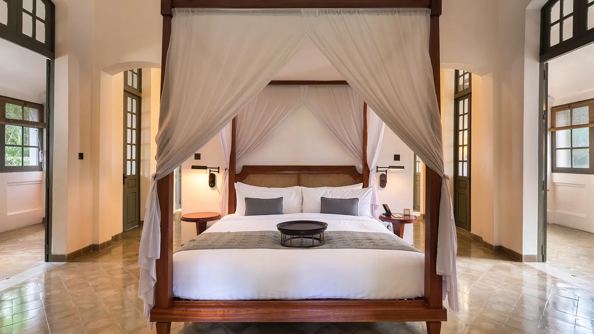
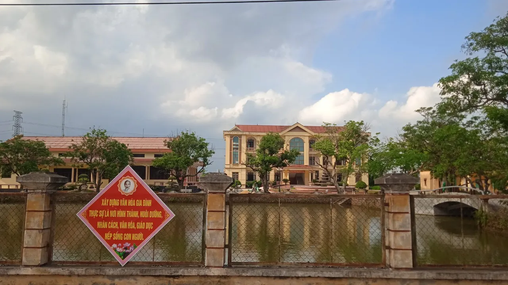
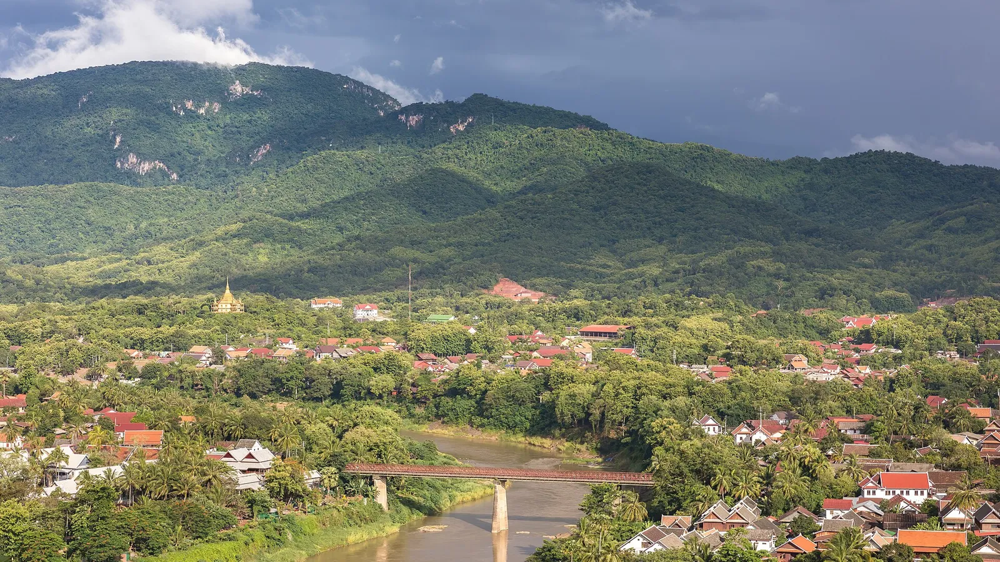
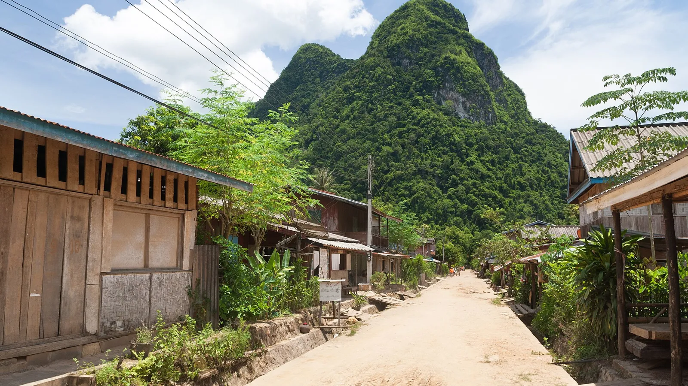
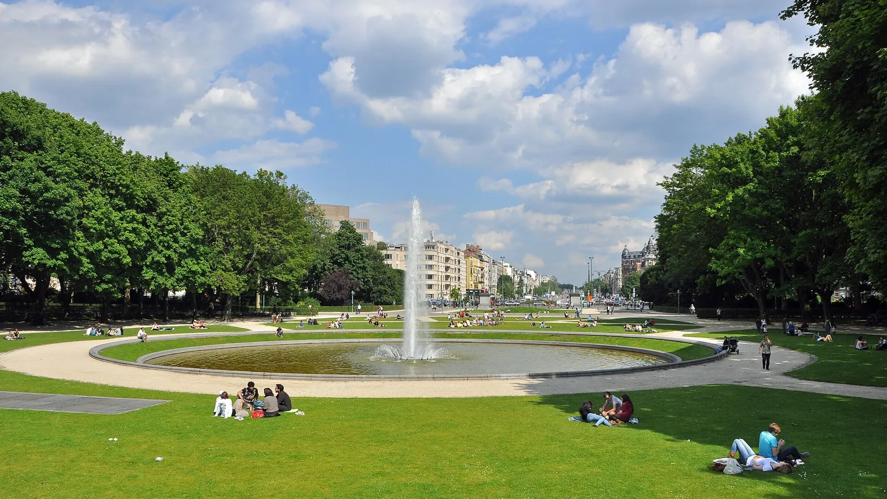
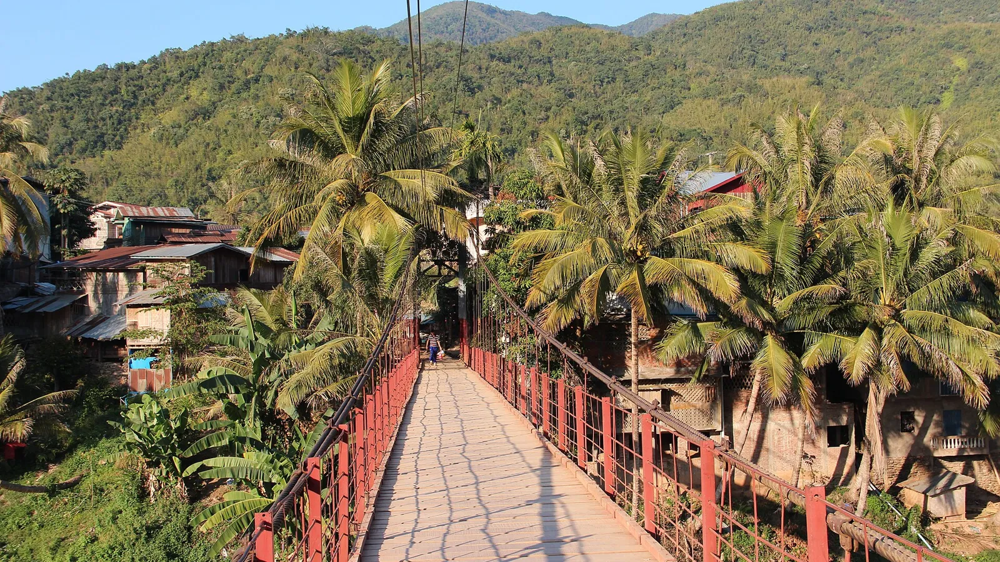
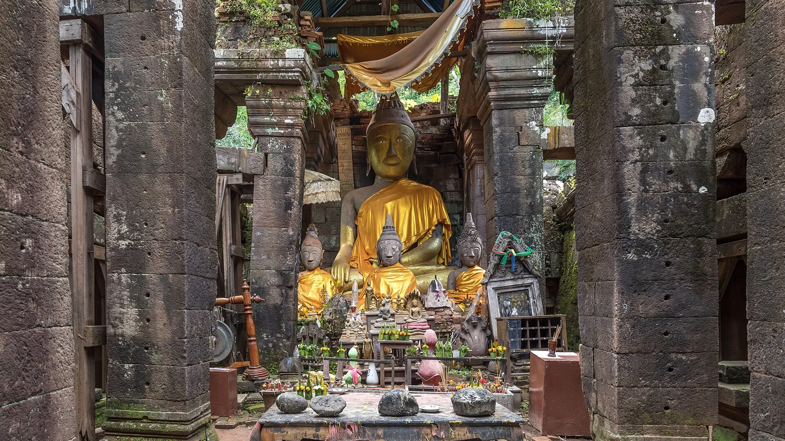
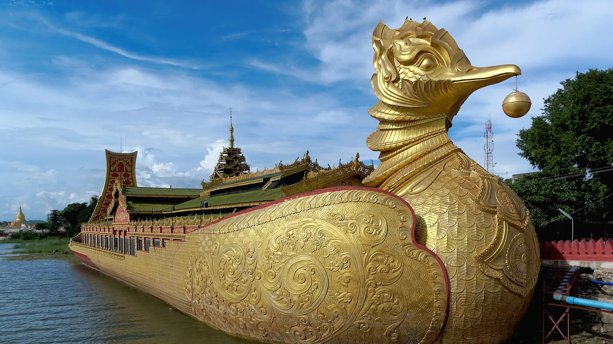
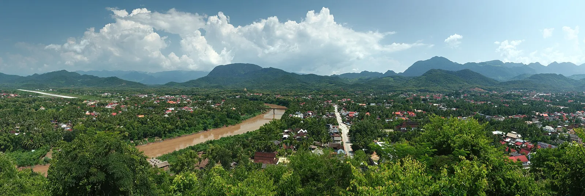
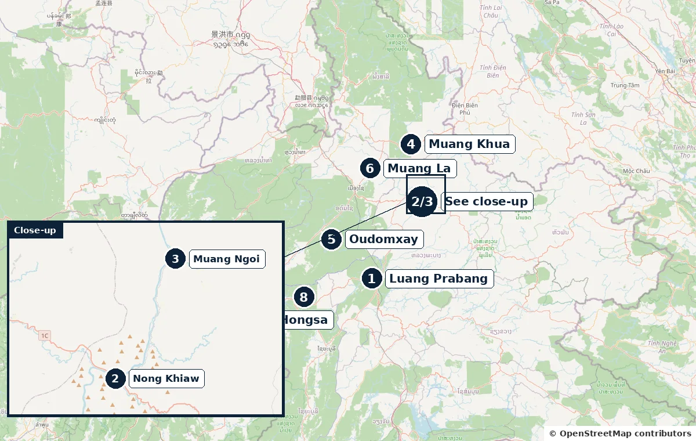

A small-group or private journey into Laos's mountainous north, for travellers who want village life and rivers rather than sights. From Luang Prabang you drive to Nong Khiaw under its limestone cliffs, cruise up the Nam Ou to car-free Muang Ngoi and on to Muang Khua, spend three nights at a nature resort in the Oudomxay forest with treks to Khmu, Hmong, Ikhor and Akha villages, then reach the Mekong at Pakbeng and return to Luang Prabang. Hydropower dams now cut the Nam Ou, so the boat trip includes a short change of boat at the dam. The tour starts with a morning departure from Luang Prabang, so arrive the day before; we suggest two extra nights there for the town itself.
See it for yourself
Photos from the journey









Where you go
The journey on one map

Luang PrabangBan Na YangNong KhiawMuang NgoiMuang KhuaOudomxayMuang LaPakbengHongsaLuang Prabang
Day by day, in short
Daily travel brief
Distances are by road for the whole day. The full plan with timings comes with your detailed itinerary.
-
1
Luang Prabang to Nong Khiaw
- Roads in the north are narrow and winding; take motion-sickness tablets if you need them.
-
2
Pha Xom Nang sunrise, caves and villages
- Pha Xom Nang viewpoint: a head torch and shoes with grip; the path is steep.
- Ask before photos; give supplies to the teacher, not sweets to children.
-
3
Nam Ou river cruise to Muang Ngoi
- The guesthouse is simple; electricity and hot water can be limited.
-
4
Up the Nam Ou to Muang Khua, then the forest resort
- Boat to Muang Khua: you change boats at the hydropower dam; the crew carries luggage.
- Wear the life jacket on the boat at all times.
-
5
Trek to Ban Phavie
- Waterfall and swim: swim only where your guide says the water is safe.
- Lunch included; ask the guide for a vegetarian meal the day before.
-
6
Muang La and the hill-tribe villages
- Wat Pha Chao Singkham: cover shoulders and knees; shoes off.
- Lunch included in a village or picnic.
-
7
Phou That viewpoint and down to Pakbeng
- Pakbeng is a small river town; most visitors arrive by slow boat.
-
8
Via Hongsa back to Luang Prabang
- If you stay on, watch the dawn alms-giving quietly from across the street; never block the monks' path or use flash.
-
9
Fly home from Luang Prabang
- Transfer to Luang Prabang airport: be at the airport 2 to 3 hours before an international flight.
- The Laos-China railway to Vientiane is an alternative for onward travel.
Local know-how
Travel hacks from our desk
Hotel deposit
Use a credit card for the deposit or pre-authorisation at check-in, never a forex or debit card. Forex cards cannot hold funds, many hotels refuse them, and a credit-card hold is released faster.
Kip and cash
Laos uses the kip. Cards work only in Luang Prabang hotels; carry kip and small US dollar notes for the north, where there are few ATMs.
Unexploded ordnance
Bombs from the 1960s and 70s still lie in rural Laos. Never leave marked paths or touch metal objects in the forest; stay with your guide.
Village etiquette
Ask before photographing people, do not enter homes or spirit houses without invitation, and give school supplies to the teacher rather than sweets to children.
Temples and trekking
Cover shoulders and knees in temples and remove shoes. Bring trekking shoes, a hat, insect repellent and a light rain jacket.
When to go
Best time to visit for this journey
November to February.
November to February: dry, clear and cool (cold at dawn in the hills). March and April are hazy from field burning; May to October brings heavy rain and muddy trails.
The package
What's included
Included
- 8 nights with breakfast
- Lunches on days 5 and 6
- Private car with driver and English-speaking guide
- River boats on the Nam Ou
- 4x4 to the hill villages
- Village visits and treks as described
- 24/7 support from Blue Diamond Voyage
Not included
- International flights
- Laos visa
- Other meals
- Drinks
- Tips
- Travel insurance
The detailed itinerary
Some journeys are planned. Ours are crafted.
The full 9-day plan is ready: hour-by-hour timings, drive times, temple dress codes, food for your diet and a route map for every day. Tell us your dates and your city, and we'll send it to you on WhatsApp, shaped around you.
- Hour-by-hour timings
- A route map for every day
- Hotel and room details
- Visa and entry steps
- Vegetarian and Jain dining
24/7 travel desk+91 97148 59797+91 98242 21400
Photo and map credits
- Luang Prabang: Basile Morin, CC BY-SA 4.0, via Wikimedia Commons
- Pha Xom Nang: Taxigiadinh, CC BY-SA 4.0, via Wikimedia Commons
- Nam Ou: Basile Morin, CC BY-SA 4.0, via Wikimedia Commons
- Muang Ngoi: Ekrem Canli, CC BY-SA 4.0, via Wikimedia Commons
- Pak Khai: Marc Ryckaert, CC BY 3.0, via Wikimedia Commons
- Muang La: GuillaumeG, CC BY-SA 3.0, via Wikimedia Commons
- Phou That: Basile Morin, CC BY-SA 4.0, via Wikimedia Commons
- Hongsa: Jakub Hałun, CC BY-SA 4.0, via Wikimedia Commons
- Luang Prabang International Airport: Benh LIEU SONG, CC BY-SA 3.0, via Wikimedia Commons
- Maps: © OpenStreetMap contributors; road routes by OSRM.